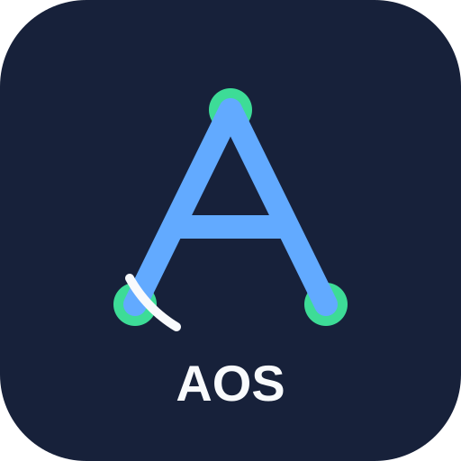

Criação e publicação
Preparação e gerenciamento de Pins, pastas, imagens, vídeos e links relacionados a conteúdo e produtos de afiliados.

Ferramenta para organizar, preparar e gerenciar publicações e integrações autorizadas por meio de APIs oficiais.
O Affiliate OS é uma ferramenta de automação de marketing de afiliados. Em sua configuração atual, é usada pelo proprietário em suas próprias contas autenticadas para organizar conteúdo, preparar publicações e gerenciar integrações autorizadas.
As integrações utilizam APIs oficiais e fluxos de autorização explícitos. O aplicativo não solicita a senha de serviços integrados.
Preparação e gerenciamento de Pins, pastas, imagens, vídeos e links relacionados a conteúdo e produtos de afiliados.
A autenticação depende de consentimento explícito. A autorização local pode ser removida e o acesso também pode ser revogado na plataforma integrada.
O Affiliate OS não vende dados pessoais e limita o tratamento aos dados necessários para as funcionalidades autorizadas.
A versão atual é destinada ao uso do proprietário da aplicação em sua própria conta autenticada e não foi projetada para acessar silenciosamente contas de terceiros.
Contato público do projeto: GitHub — ldservicoseletricos-ops.